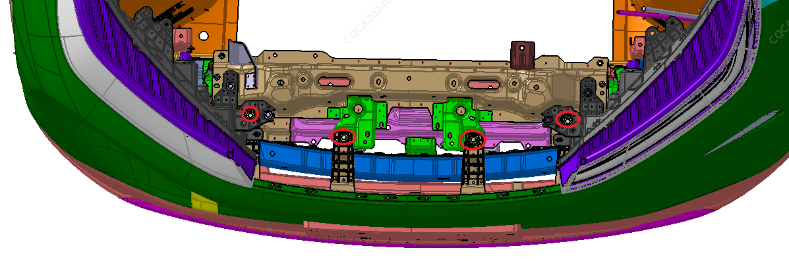
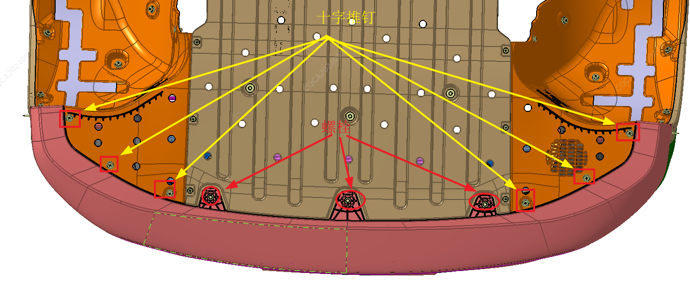
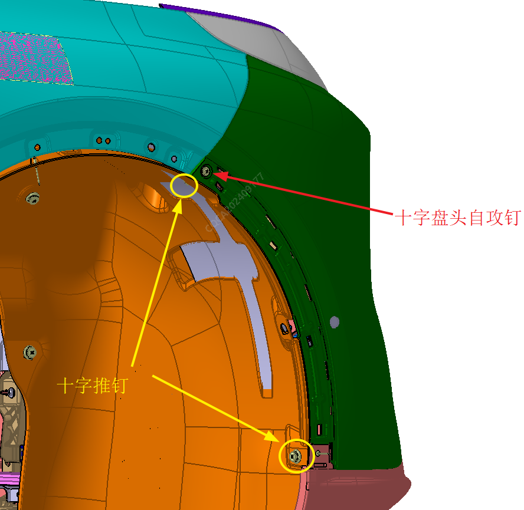
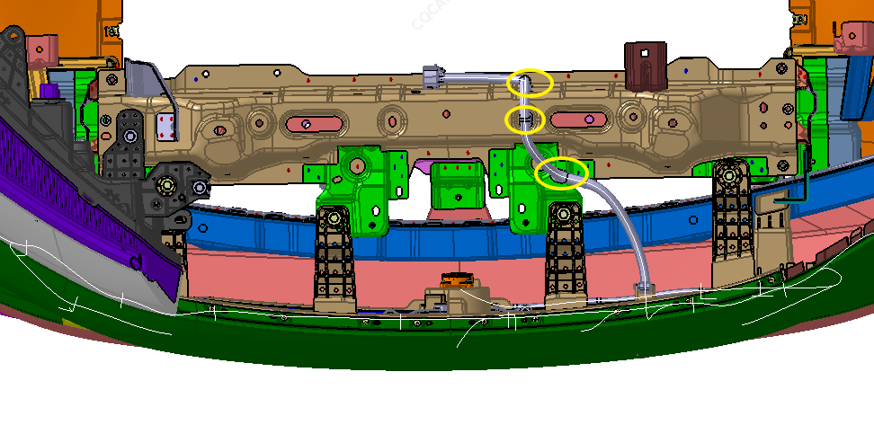
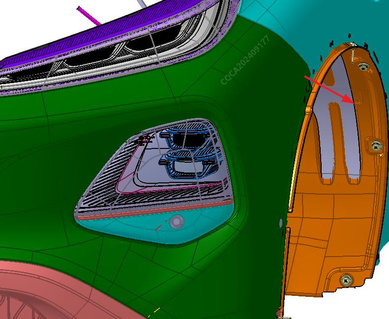
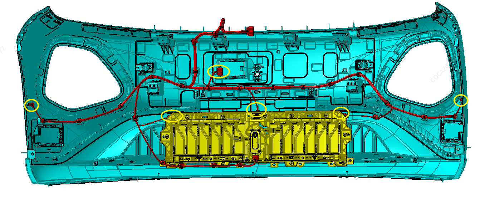
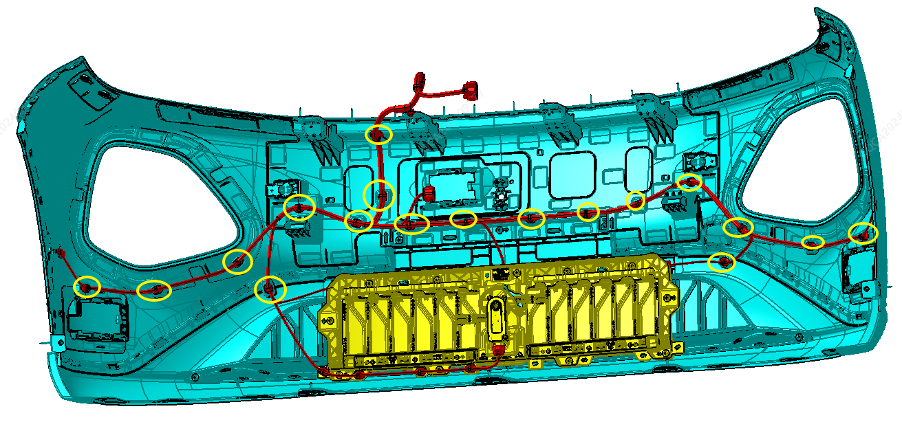
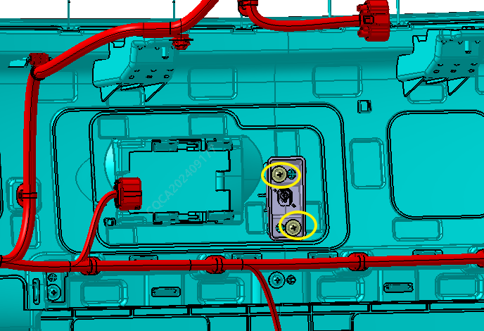
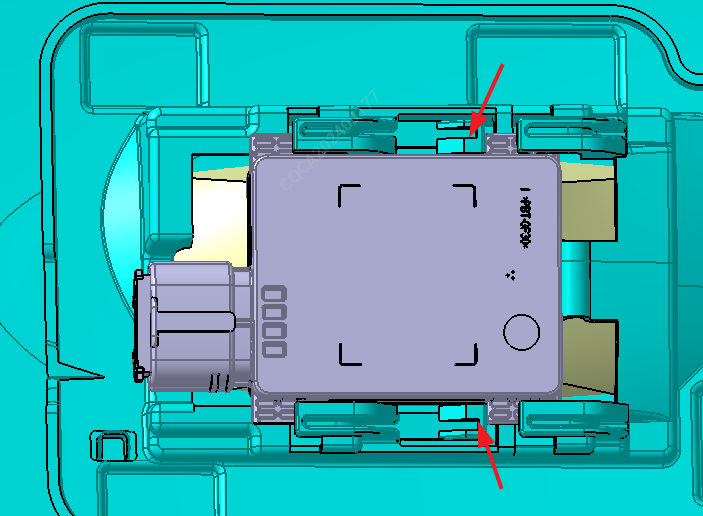

Снятие
Демонтировать верхнюю декоративную накладку переднего бампера, см. Снятие и установка облицовки моторного отсека;
Демонтировать переднюю колесную арку, см. Снятие и установка облицовки моторного отсека;
Демонтировать переднюю сквозную фару, см. Комбинированная фара;
С помощью торцевой головки № 10 выкрутить 4 крепежных болта M6 в верхней части бампера;

С помощью торцевой головки № 10 выкрутить в общей сложности 3 крепежных болта M6 совместного крепления нижней части бампера и узла дефлектора передней части кузова, с помощью крестовой отвертки выкрутить 6 крестовых пистонов крепления нижней части бампера к подкрылку переднего колеса;

С помощью крестовой отвертки выкрутить 4 крестовых пистона в местах прилегания левой и правой сторон переднего бампера к подкрылку, а также 2 крестовых винта с полукруглой головкой в местах прилегания левой и правой сторон переднего бампера к боковым монтажным кронштейнам;

Вручную отсоединить штекер жгута проводов переднего бампера и штекер камеры переднего бампера, с помощью съемника фиксаторов снять 3 фиксатора крепления жгута проводов переднего бампера к сварному узлу передней части;

Вручную потянуть передний бампер наружу для рассоединения его с крылом и боковыми кронштейнами. Операции для левой и правой сторон одинаковы;

Вручную отсоединить штекер жгута проводов радара APA, штекер жгута проводов ACC, жгут проводов датчика температуры;

Демонтаж активной решетки радиатора: см. Снятие и установка узла активной решетки радиатора;
С помощью съемника фиксаторов демонтировать жгут проводов с переднего бампера;

С помощью крестовой отвертки выкрутить 2 винта крепления кронштейна камеры на переднем бампере;

Вручную демонтировать угловой радар и ACC;

Демонтаж датчика радарной парковки: см. Установка и Снятие датчика системы автоматической парковки;
Демонтаж передней камеры: Передняя камера.
Установка
Установка выполняется в порядке, обратном снятию.